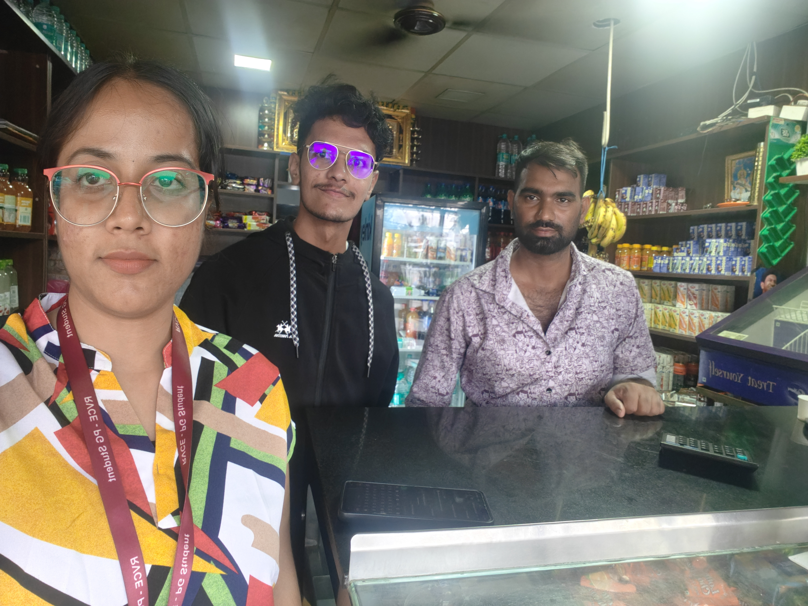
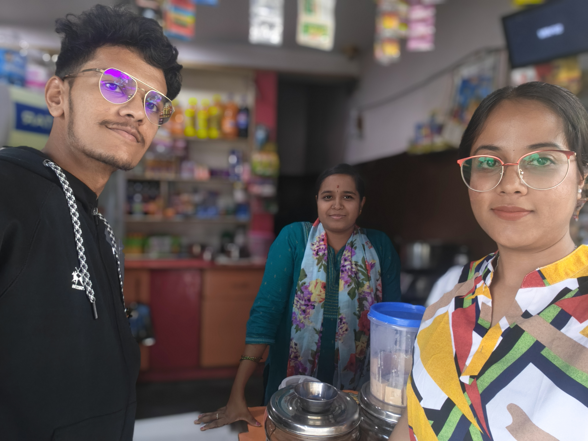
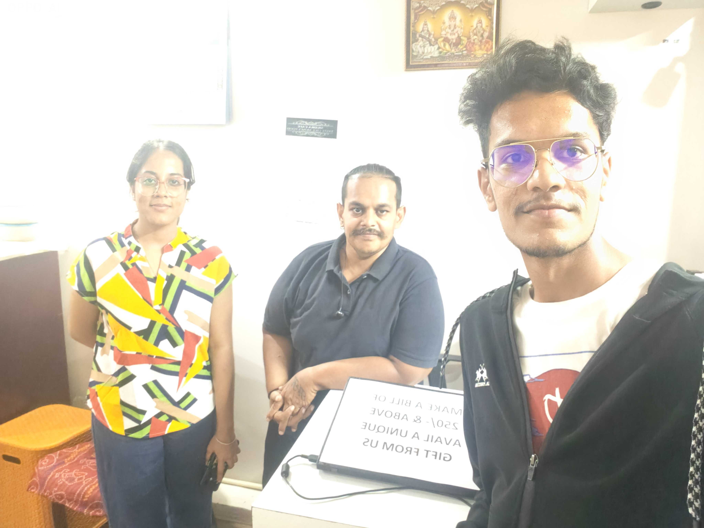
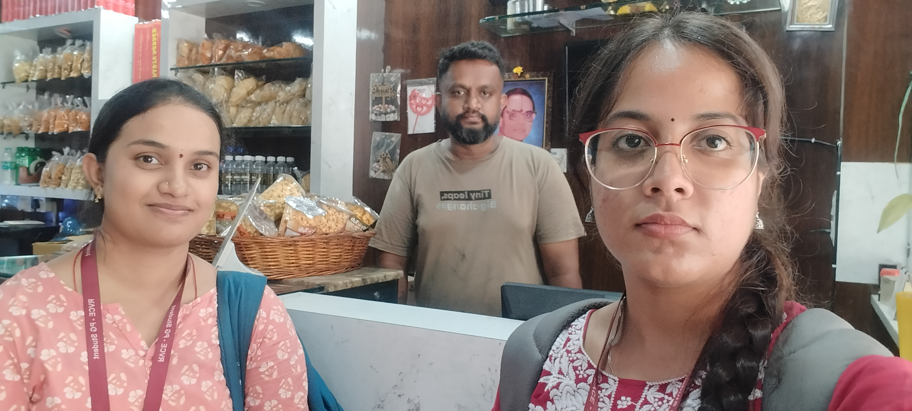
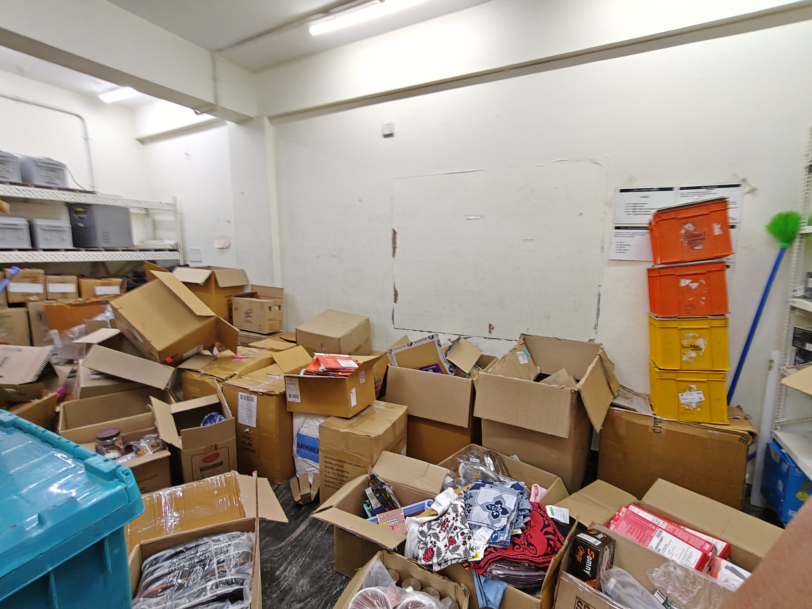

ReBox Empathy & Define Phase
Hari Charan V, Anjali Kumari, Supriya
Mentor: Prof. Chandrani Chakravorty | MCA427DL Design Thinking Lab
14th May 2026
1. Research Overview (Data at a Glance)
| Metric | Count |
|---|---|
| Online Shopper Surveys | 30+ |
| Shopkeeper Surveys (English & Kannada) | 30+ |
| Audio Recordings (Field Interviews) | 22 |
| Field Visit Photographs | 20+ |
| Vendor Locations Visited | 30+ |
Methods Used:
- 1-on-1 in-person interviews (shopkeepers & residents)
- Printed questionnaire surveys (both stakeholder groups)
- Audio recording of vendor conversations (WhatsApp + Phone)
- On-site observation at kirana stores, fruit vendors, bakeries
- Photography for visual evidence documentation
User Interviews: Online Shoppers
Target: Urban residents (21–45 yrs) from Bangalore, Hyderabad, Tumkur, Bidar, Kadapa, Tirupati
"I feel guilty… but boxes take up too much space."
— Bhargavi, 28
"Convenience is the biggest motivation for me."
— Harsha, 23
"Carrying large boxes downstairs is very difficult."
— Swarna, 45
What we observed:
- Balconies cluttered with flattened Amazon/Flipkart boxes
- Boxes sitting for 3–7 days before disposal
- Kabadiwala visits are irregular (once a month or less)
- Residents default to the easiest disposal — municipal dry waste bin
User Interviews: Shopkeepers & Vendors
Target: Kirana stores, fruit sellers, bakeries, stationery shops across 15+ areas in Bangalore
"A box is a box. My customer doesn't look at who sent it before."
— Local Vendor
"If someone brings me good boxes for ₹5, I'll take all of them."
— Fruit Seller
"We reuse boxes until they fall apart."
— Kirana Store Owner
Vendor Feedback on Logos:
- 96% of vendors surveyed stated that Amazon/Flipkart logos are "No problem"
- Primary concern is structural integrity, not branding.
- Cost reduction overrides any branding concerns.
Field Evidence: Vendor Interviews
Authentic documentation of our on-ground interviews with local shopkeepers.




Field Evidence: Survey Data Collection
Gathering quantitative and qualitative data from stakeholders.
/WhatsApp Image 2026-05-13 at 8.46.36 PM.jpeg)
/WhatsApp Image 2026-05-13 at 8.46.37 PM.jpeg)
/WhatsApp Image 2026-05-13 at 8.46.39 PM.jpeg)
/WhatsApp Image 2026-05-13 at 8.46.40 PM.jpeg)
/WhatsApp Image 2026-05-13 at 8.46.41 PM.jpeg)
/WhatsApp Image 2026-05-13 at 8.46.42 PM.jpeg)
Field Evidence: Packaging & Environment
Visual documentation of the clutter problem and packaging usage in stores.


.jpeg)
Key Findings: Online Shoppers
Finding 1: Space is the #1 Pain Point
- 80%+ of shoppers cited clutter / "no storage space" as the primary reason for quick disposal
- Most discard boxes within 3–7 days
Finding 2: Eco-Guilt is Overridden
- Users feel guilty throwing structurally perfect boxes
- But convenience always wins over guilt
- "I prioritize a clean house over the guilt"
Finding 3: 100% Demand a Bin
- 100% would use a basement drop-off bin
- Zero-effort, nearby collection point resonated universally
Finding 4: Incentive Split by Age
- Young (20–30): Prefer cashback, app rewards
- Older (40+): Prefer doorstep pickup, no apps
- Leads to our LAYERED solution approach
Key Findings: Shopkeepers
Finding 1: Packaging is a Major Cost
- Vendors spend ₹20–₹35 per NEW box
- Monthly spend: ₹500 to ₹5,000+
- 2nd largest operational cost after inventory
Finding 2: Brand Neutrality
- 96% said Amazon/Flipkart logos are "No problem"
- Only requirement: clean, dry, intact
Finding 3: High Willingness to Adopt
- 90%+ would use second-hand boxes
- Preferred price: ₹1–₹5 per box or free
Finding 4: Preferred Logistics
- Most willing to self-pick up from a nearby point
- Can't stockpile due to limited shop space
Quantitative Data Analysis
Visualizing the results from 50+ primary research surveys.
Shoppers: Reason for Disposal
Shoppers: Willingness for Bin Drop-off
Vendors: Would you buy used boxes?
Vendors: Do e-commerce logos matter?
Quantitative Data Analysis (Part 2)
Behavioral patterns and economic thresholds driving the ReBox solution.
Shoppers: Package Frequency (Monthly)
Shoppers: Current Disposal Method
Vendors: Acceptable Price for Reused Box
Vendors: Current Sourcing Method
Actionable Insights & Directives
Translating quantitative survey data into core system requirements.
1. The "Volume vs. Effort" Insight
Data: 65% of users rely on dry waste bins, yet 72% are highly willing to use a drop-box.
Design Directive: The solution MUST mimic the zero-friction experience of a garbage bin. If ReBox requires an app download or waiting for a pickup, 65% of the target market will default back to the trash bin.
2. The "Price Gap" Insight
Data: 70% of vendors buy new boxes, but 60% are willing to pay ₹2-₹5 for used ones.
Design Directive: There is a massive arbitrage opportunity. A new box costs ₹25. ReBox can easily price boxes at ₹5 (an 80% discount for vendors) and still generate revenue to sustain the collection logistics.
3. The "Aesthetic Apathy" Insight
Data: 96% of vendors do not care about e-commerce logos.
Design Directive: We do NOT need to invest in de-branding, repainting, or physically altering the boxes. The operational focus should be purely on structural sorting (intact vs. crushed), minimizing processing costs to nearly zero.
4. The "Continuous Supply" Insight
Data: 50% of households receive 5-10 packages monthly.
Design Directive: A single apartment complex of 200 units generates ~1,500 boxes a month. The supply is highly concentrated. Collection bins must be designed with significant volume capacity to prevent overflow.
2. Empathy Map: Online Shopper
SAYS
- "I'll give it to the scrap guy later."
- "These boxes take up too much space."
- "I don't have time to use a recycling app."
THINKS
- "I am contributing to environmental waste."
- "There must be someone who needs these."
- "Why is recycling so inconvenient?"
DOES
- Hoards boxes in the balcony until they become an eyesore
- Flattens them and throws in municipal dry waste
- Defaults to the easiest disposal method available
FEELS
- Guilty about wasting good materials
- Frustrated by the clutter in small apartment
- Apathetic toward complex recycling programs
Core Need:
A zero-effort, nearby way to dispose of boxes that actually leads to reuse — not guilt-inducing destruction.
Empathy Map: Local Vendor
SAYS
- "Cardboard prices keep going up."
- "My margins are disappearing."
- "I have to pass the packaging cost to the customer."
THINKS
- "I wish I could get cheap, strong boxes locally."
- "The scrap dealer charges too much for old boxes."
- "How can I cut operational costs without losing quality?"
DOES
- Travels to wholesale markets to buy new boxes in bulk
- Stores excess box inventory, tying up working capital
- Reuses boxes until they completely break apart
FEELS
- Stressed about rising wholesale supplier rates
- Helpless regarding dependency on raw paper prices
- Pragmatic — happy to use branded boxes if they lower costs
Core Need:
A consistent, hyper-local, affordable supply of structurally intact boxes — brand doesn't matter, cost and reliability do.
User Personas
Humanizing our target stakeholders based on collected survey data.
"The Convenience Seeker"
Priya, 28, IT Professional
Goal: Get rid of accumulated e-commerce boxes without hoarding them.
Frustration: Municipal waste collectors often refuse large cardboard, leaving boxes cluttering her balcony.
Behavior: Receives 5-8 packages/month. Will walk to a basement drop-bin, but will NOT download an app.
"The Pragmatic Vendor"
Ramesh, 45, Kirana Store Owner
Goal: Source cheap, sturdy packaging for customer deliveries and organizing inventory.
Frustration: Buying new boxes cuts into thin profit margins. Scrap dealers are unreliable on quality.
Behavior: Needs 30-50 boxes/month. Doesn't care if the box says "Amazon" — pays ₹3-₹5/box.
3. Point of View (POV) Statements
Shopper POV
Urban apartment residents who shop online frequently NEED a zero-friction way to dispose of their accumulating e-commerce packaging BECAUSE space constraints force rapid disposal, while eco-guilt makes them wish for a better option than the garbage bin.
Vendor POV
Local kirana store owners and small vendors NEED a consistent, hyper-local supply of affordable corrugated boxes BECAUSE purchasing new packaging at ₹20–35/box is consuming 10–15% of their already thin margins, and the current scrap ecosystem channels all used boxes to pulp factories instead of back to vendors who could reuse them.
Root Cause Analysis (5 Whys)
Problem: Perfectly good e-commerce boxes are destroyed while nearby vendors pay premium for new ones.
| # | WHY? | ANSWER (Evidence-Based) |
|---|---|---|
| 1 | Why do good boxes end up in landfills? | Because residents throw them in dry waste bins. |
| 2 | Why do residents throw them away? | Because they lack space AND have no easy alternative (80% of shoppers confirmed). |
| 3 | Why is there no easy alternative? | Because kabadiwala visits are irregular, and no local collection system exists. |
| 4 | Why doesn't the kabadiwala redirect boxes to vendors? | Because he sells by WEIGHT to pulp factories — crushing is more profitable than preserving. |
| 5 | Why don't vendors collect directly from apartments? | Because NO organized system connects box-generators (residents) with box-needers (vendors). |
🎯 ROOT CAUSE:
The scrap ecosystem is optimized for RECYCLING (destroy → pulp → new box), not REUSE (redirect intact box). There is zero infrastructure connecting apartment residents with local vendors at the neighborhood level.
Fishbone Diagram Categories
PROBLEM: E-commerce boxes are destroyed instead of reused locally.
🧑🤝🧑 PEOPLE
- Residents prioritize convenience over eco-guilt
- Vendors don't know apartments generate box surplus
- Kabadiwala is incentivized to destroy, not preserve
⚙️ PROCESS
- No organized collection mechanism at apartment level
- Scrap pipeline is linear, not circular (Consumer → Kabadiwala → Pulp Factory)
- Municipal waste mixes cardboard with other waste
💰 ECONOMICS
- Scrap value: ₹3/box vs. Reuse value: ₹20–35/box
- Kabadiwala earns more from weight-based selling
- Vendors can't compete with factory bulk-buying prices
🏗️ INFRASTRUCTURE
- No collection bins for reusable boxes in apartments
- No matchmaking platform between supply and demand
- No tracking/quality assurance system for reused boxes
Problem Definition
The Macro Problem:
India ships ~15 million e-commerce parcels per day. These structurally perfect boxes enter a broken pipeline: consumer → kabadiwala → pulp factory → DESTROYED. Meanwhile, 12–15 million local vendors pay ₹20–35 per NEW box.
Key Insight: REUSE ≠ RECYCLING
- Current system RECYCLES (destroys)
- ReBox proposes REUSE (redirects intact)
- A box can be reused 5–7 times
- Each reuse avoids manufacturing carbon
The Value Gap
| Scrap value of 1 used box | ₹2–4.50 |
| Cost of 1 new box for vendor | ₹20–35 |
| Price gap (Opportunity) | ₹15–30 / box |
| Vendor Savings Potential | 80–100% |
How Might We (HMW) Statement
"How Might We intercept structurally intact e-commerce boxes at the apartment level and redirect them to local vendors who need them — making disposal effortless for residents and supply reliable for shopkeepers?"
Why this HMW works:
- ✅ Solution-agnostic: Doesn't prescribe app, QR, or specific tech
- ✅ Dual-sided: Addresses both stakeholder groups
- ✅ Grounded: Focuses on the key insight (reuse > recycling)
- ✅ Data-driven: Derived from 50+ primary research data points
4. Insights Summary & Justification
| # | Insight | Evidence Source | Data Point |
|---|---|---|---|
| 1 | Space stress drives disposal | 25+ shopper surveys | 80%+ cited clutter as #1 reason |
| 2 | Convenience wins over eco-guilt | In-depth interviews | "I prioritize clean house over guilt" |
| 3 | Vendors are desperate for cheap boxes | 25+ shopkeeper surveys | ₹500 to ₹5,000+/month on packaging |
| 4 | Brand logos are NOT a barrier | Shopkeeper surveys (Q7) | 96% said "no problem" or "okay" |
| 5 | Scrap ecosystem destroys reuse value | Secondary research + audio | ₹3 scrap vs ₹25 reuse value per box |
| 6 | No competitor does consumer-to-vendor | Market analysis | Recykal, Saahas send to recycling |
| 7 | EPR regulations create tailwind | MoEF&CC (April 2026) | Paper packaging EPR now effective |
The Supply-Demand Match
| Dimension | Online Shoppers (SUPPLY) | Shopkeepers (DEMAND) |
|---|---|---|
| Core Pain | Clutter & Eco-Guilt | High packaging costs |
| Need | Frictionless, nearby disposal | Cheap, sturdy boxes on demand |
| Motivation | Rewards, convenience | Profit margin protection |
| Current Behavior | Throws in dry waste / hoards | Buys expensive new boxes |
| Barrier | "Too much effort" / no option | No organized local supply |
Research Data Inventory
| Data Type | Count | Status |
|---|---|---|
| Online Shopper Questionnaires | 30+ filled | ✓ Complete |
| Shopkeeper Bilingual Surveys | 30+ filled | ✓ Complete |
| Audio Recordings (WhatsApp/Phone) | 22 files | ✓ Archived |
| Field Visit Photographs | 20+ photos | ✓ Documented |
| Vendor Locations Visited | 30+ locations | ✓ Complete |
| Mentoring Session Reports | 3 sessions | ✓ Filed |
All raw data available for verification.
Thank You
Team: Hari Charan V | Anjali Kumari | Supriya
Mentor: Prof. Chandrani Chakravorty
Course: MCA427DL Design Thinking Lab
R.V. College of Engineering, Bengaluru — 2026